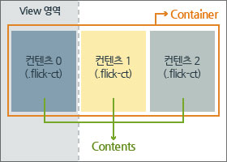
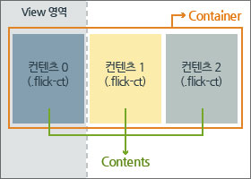

{+data.alias+}
Version : {+publish.conf.version+}
여러개의 콘텐츠 영역을 사용자 터치의 움직임을 통해 좌/우, 상/하 로 슬라이드하여 보여주는 컴포넌트
Description
Flicking 컴포넌트는 여러개의 콘텐트를 사용자의 터치 움직임으로 네비게이션하여 보여주기 적합한 컴포넌트이다.
Flicking 컴포넌트는 아래 그림과 container, view, contents 영역으로 나뉜다.

[컨텐츠 구조]
{+include("method.html")+}
Flicking 컴포넌트는 아래 그림과 container, view, contents 영역으로 나뉜다.

[컨텐츠 구조]
view 영역
실제 화면에서 보이는 영역이다.
overflow 속성을 hidden으로 처리한다.
container 영역
실제로 scroll되는 대상영역이다. Scroll 컴포넌트를 통해 움직인다.
container영역의 크기는 contents의 개수에 따라 설정한다.(Flicking 컴포넌트의 bAutoResize 를 true로 설정할 경우)
contents 영역
Flicking 되면서 화면에 보여지는 단위의 객체이다.
각 contents의 사이즈를 view 사이즈에 맞춰서 조절한다. (Flicking 컴포넌트의 bAutoResize를 true로 설정할 경우)
√ 실제 container 영역을 Scroll컴포넌트를 통해 슬라이드 효과를 구현한다.
√ Flicking 컴포넌트의 경우 페이지 로드시에 전체 contents 영역의 개수를 알고 있어야 한다.
√ Flicking 컴포넌트의 경우 페이지 로드시에 전체 contents 영역의 개수를 알고 있어야 한다.
Notice
√ 지원 브라우저
- 안드로이드 2.1 이상
- iOS 3.0 이상
√ 주의사항
- iOS 3.X
- 롱탭에 의해 클립보드 기능이 활성화 되면 플리킹이 정상 동작 하지 않는다.클립보드 기능이 활성화 되는 순간 touchCancel이 발생되면서 터치 정보를 얻어 올 수 없다.
- 안드로이드2.1
- 드래그기능을 지원하지 않는다.기본 touchmove 이벤트가 제대로 발생하지 않는다.
안드로이드2.1의 경우 손을 화면에서 떼는 순간 touchmove가 발생하는 브라우저 버그가 있다.
touchmove이벤트를 제대로 발생시키기 위해서는 touchstart에서 기본동작을 중지시켜야 한다.
√ 마크업 주의사항
- z-index 설정
- 페이지 이동시, 컴포넌트를 사용하는 페이지가 하얗게 된다.
단, 페이지 이동시 컴포넌트를 제외한 영역이라도 하얗게 되는 문제를 제거하기 위해서는
컴포넌트 외부 영역의 z-index를 1보다 작거나 같게 수정하여야한다.
- em 단위 사용시 주의 사항
- em 단위 사용시 큰 단위의 값 (-999em, 200em)으로 줄 경우 ios 화에서 깜박거리거나, 하얗게 변하는 형상이 발생한다.
-999em 단위 대신 px 단위로 설정해야 한다. - text-indent와 같은 속성 사용시 주의 사항
- text-indent의 값을 -999px와 같은 값으로 줄 경우, 스크롤 컨텐츠가 늘어날 경우, ios 화면에서 깜빡이거나, 하얗게 변하는 현상이 발생한다.
즉, 화면에 보여지지 않는 영역(안드로메다 영역이라고 부릅니다)에 대상 컨텐츠를 위치시킬 경우, 컨텐츠의 길이가 늘어나면 화면이 하얗게 되거나 깜빡이는 현상이 발생한다.
컨텐츠의 길이가 클 경우, 화면뷰에만 엘리먼트가 위치하도록 한다
Initialization
- HTML
-
- 기준 엘리먼트를 기준으로 컴포넌트 내부에서 필요한 엘리먼트를 찾는다.
- container영역의 엘리먼트의 경우 [prefix]+'container'의 클래스명을 가진다.
- contents영역의 엘리먼트의 경우 [prefix]+'ct'의 클래스명을 가진다.
- CSS
- Javascript
Option
| Name | Desc | Default |
|---|---|---|
| bHorizontal | 가로여부 | true |
| sClassPrefix | Class의 prefix명 | flick- |
| nDefaultIndex | 초기 로드시의 화면에 보이는 콘텐츠의 인덱스 | 0 |
| bAutoResize | 화면전환시에 리사이즈에 대한 처리 여부 | true |
| bAutoSize | view 영역에 맞게 패널및 컨테이너의 사이즈를 지정할지 여부 | true |
| nFlickThreshold | 콘텐츠가 바뀌기 위한 최소한의 터치 드래그한 거리 (pixel) | 40 |
| nDuration | 슬라이드 애니메이션 지속 시간 | 200 |
| nFlickDistanceOffset | 각 컨텐츠의 위치에서 상대적인 위치 값을 설정하여 플리킹 이동을 이 위치만큼 이동하게 수정가능한 옵션 |
null |
| bActivateOnload | 컴포넌트 로드시 activate 여부 | true |
Custom Event
| Name | Desc | Custom Event Object Properties |
|---|---|---|
| beforeFlicking | 플리킹되기 전에 발생한다. |
|
| afterFlicking | 현재 화면에 보이는 콘텐츠가 바뀔경우 수행된다. |
|
| touchStart | 플리킹영역에 터치가 시작되었을 때 발생한다. |
|
| touchMove | 플리킹영역에 터치 움직임이 있을 때 발생한다. Touch이벤트의 'touchMove'와 동일하다 |
|
| touchEnd | 플리킹영역에 터치가 끝났을 때 발생한다. Touch이벤트의 'touchEnd'와 동일하다 |
|